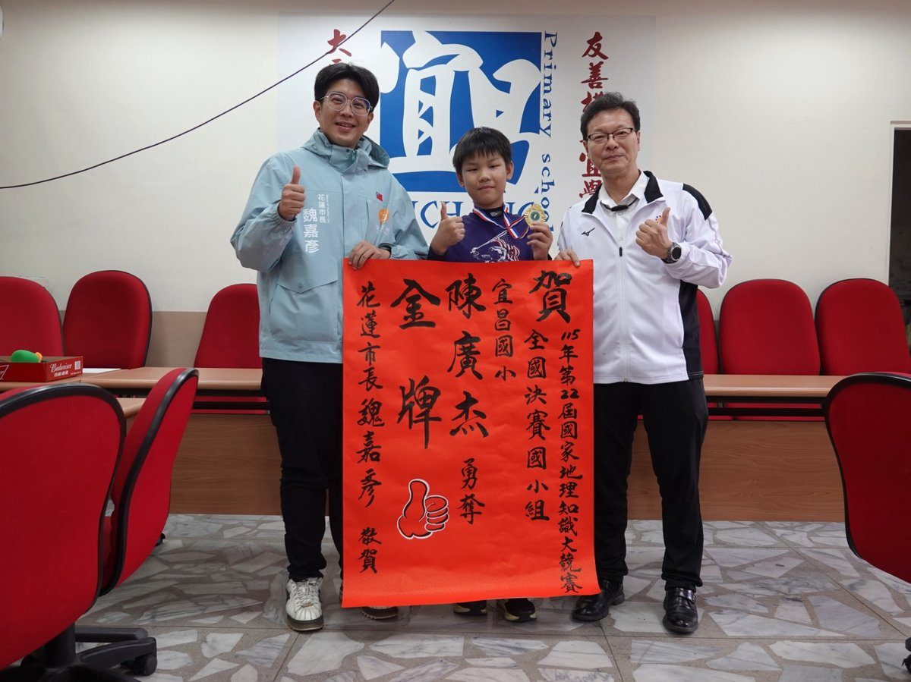

花蓮小六生陳廣杰奪全國地理金牌 魏嘉彥赴宜昌國小貼紅榜

可樂電子報小編/編輯
花蓮縣宜昌國小六年級學生陳廣杰，在「第22屆國家地理知識大競賽」摘下地理知識組國小組金牌，展現扎實的地理知識與跨領域思考能力。花蓮市長魏嘉彥今（10）日特地前往宜昌國小張貼紅榜，與校長丁嘉琦共同肯定他的優異表現，也感謝師長與家長的用心栽培，為花蓮學子樹立學習榜樣。

陳廣杰言行落落大方，談吐間流露超齡的成熟與自信。他說，課堂之外最愛從閱讀與日常觀察中探索地理，並藉由歷屆試題整理所學，讓知識慢慢累積、相互連結；好奇心的觸角從臺灣延伸到世界，各地物產、氣候變化、洋流運行，甚至國際新聞裡的地理線索，都成為他認識世界的養分。這次奪金讓他十分開心，也感受到長期努力終於有了回報。

對生活環境的關心，也讓陳廣杰把觀察化為行動。他提到，曾與學長姊在一場活動中向魏市長提出改善人行空間的建議，看見市公所近年推動的各項建設，讓他們深刻感受城市環境的蛻變與市政建設的進步；從探索地理知識到關注日常通行環境、主動表達想法，展現他對家鄉的關懷與參與公共事務的熱忱。

魏嘉彥表示，地理是一門幫助孩子認識家鄉、理解世界的學問，一條溪流的流向、一項產業的佈局，甚至一份甜點的原料，都能成為探索世界的起點。陳廣杰能在全國競賽中獲得金牌相當不容易，這份榮耀除了屬於學生，也要感謝師長用心引導及家人的支持，陪伴孩子把興趣轉化為持續學習的動力。

魏嘉彥也勉勵陳廣杰帶著這份求知熱情繼續向前，保持好奇、多問為什麼，讓知識成為觀察生活、思考問題的能力。他期盼更多花蓮孩子從認識家鄉的山川、聚落與文化出發，逐步拓展國際視野，在自己喜愛的領域累積實力、建立自信，讓花蓮的孩子在更寬廣的學習舞臺上被世界看見，也讓世界看見花蓮的教育力。

校長丁嘉琦指出，這是陳廣杰第二度進入全國決賽，今年終於勇奪金牌，全校師生都感到欣喜。競賽的價值不僅在於獎牌，更在於學習過程培養的探索精神與思辨能力，期許廣杰把此次獲獎視為新的起點，持續廣泛閱讀、關心時事，並樂於與同學分享所見所學，讓個人的學習熱情帶動更多同儕一起成長。
今年競賽題目緊扣國際時事、環境變遷與日常生活，從臺積電在德國設廠的城市、堰塞湖形成原因與馬太鞍溪水系，到熱門杜拜巧克力的原料開心果主要出口國，都成為考題素材；競賽不只考驗學生對地名與位置的認識，更重視能否連結不同資訊，理解自然環境與人類活動之間的關係，把課堂所學用在生活與時事之中。
📸 更多現場紀實影像

🌟 掌握花蓮在地第一手資訊・歡迎訂閱追蹤
深度紀實報導、在地精采影音專題，第一時間接收最新消息！